Chapter 2 Manipulating Data
2.1 Creating Subsetted Data
I encourage you to play around with babynames and get more comfortable deliberately modifying data before continuing. Or, if you’re getting sick of babies, you can use these tidyverse functions on any dataset. Let’s try using one of R’s built-in ones, mtcars:
data(mtcars)
View(mtcars)The data is lots of older car performance statistics. Let’s try comparing weight to mpg:
mtcars %>%
ggplot(aes(wt, mpg)) + geom_point()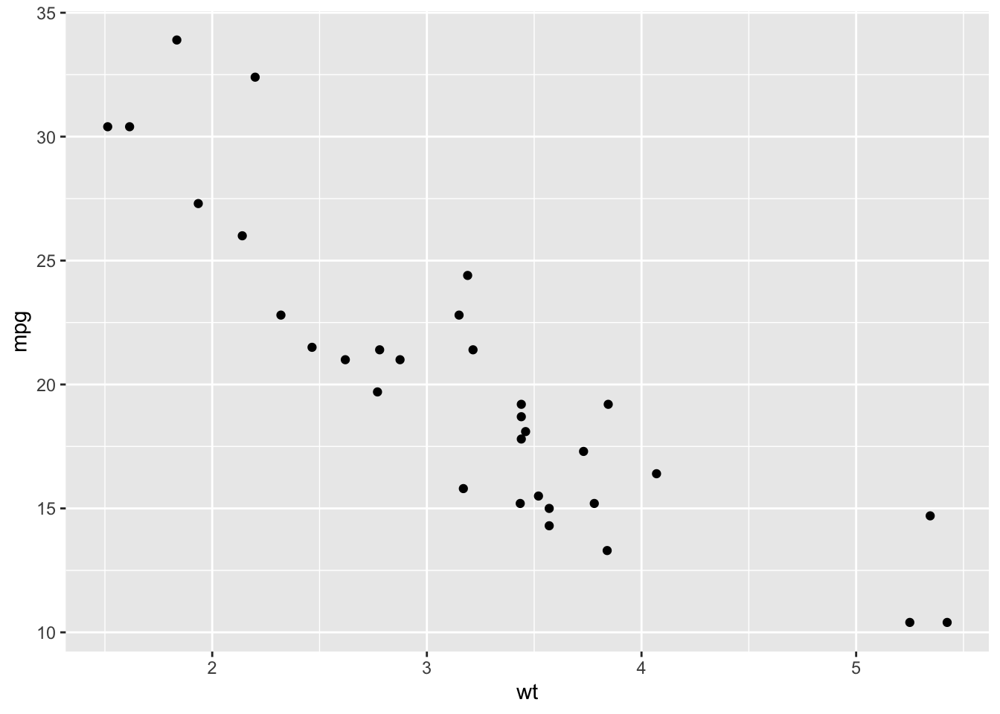
geom_point() creates a scatterplot, but we can also see hints of an overall trend, or correlation here - so let’s add that to the ggplot():
mtcars %>%
ggplot(aes(wt, mpg)) + geom_point() + geom_smooth()## `geom_smooth()` using method = 'loess' and formula 'y ~ x'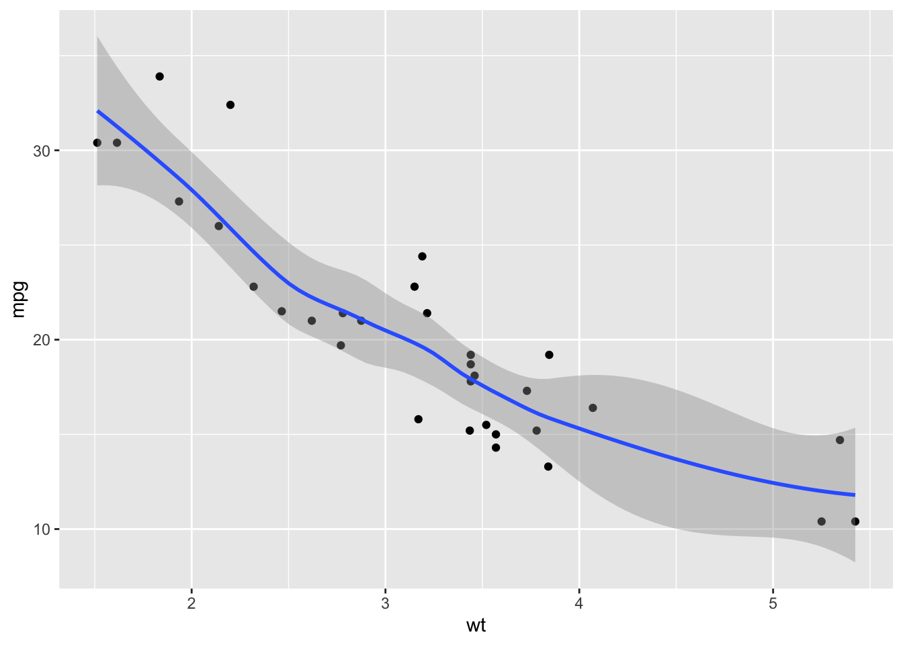
Let’s try adding color based on a variable:
mtcars %>%
ggplot(aes(wt, mpg, color = cyl)) + geom_point() + geom_smooth()## `geom_smooth()` using method = 'loess' and formula 'y ~ x'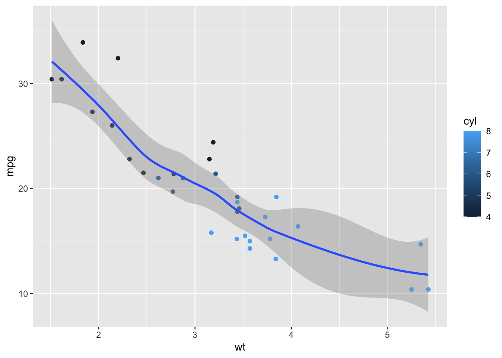
Great. On to mutate().
2.2 Mutate
While babynames has five columns, or variables, to play with, some observations require creating a calculated field of content - essentially generating a sixth column, in the case of babynames, to show something already in the data but not made clear.
Babynames does not have rankings of popular names for each year. Could we create that column? Sure! When we rearrange our data in descending order of prop, we have essentially created rankings based on row number- we just need to ‘mutate’ the data frame to show it.
babynames %>%
filter(year == 2017) %>%
arrange(desc(prop)) %>%
mutate(rank = row_number()) ## # A tibble: 32,469 × 6
## year sex name n prop rank
## <dbl> <chr> <chr> <int> <dbl> <int>
## 1 2017 F Emma 19738 0.0105 1
## 2 2017 F Olivia 18632 0.00994 2
## 3 2017 M Liam 18728 0.00954 3
## 4 2017 M Noah 18326 0.00933 4
## 5 2017 F Ava 15902 0.00848 5
## 6 2017 F Isabella 15100 0.00805 6
## 7 2017 F Sophia 14831 0.00791 7
## 8 2017 M William 14904 0.00759 8
## 9 2017 M James 14232 0.00725 9
## 10 2017 F Mia 13437 0.00717 10
## # … with 32,459 more rowsThat looks good! We can now save this new, mutated dataset:
babynames %>%
filter(year == 2017) %>%
arrange(desc(prop)) %>%
mutate(rank = row_number()) -> babynames_2017_rankedSo mutate() creates a new column, and the values of that column are determined by some sort of calculation. Thus our code for mutate() declares the new column’s name (‘rank,’ in this case), and the calculation (‘row_number,’ in this case).
Let’s try a practical use of mutate() by focusing on finding the most popular names of a particular generation.
According to Wikipedia, the ‘Silent Generation’ were born between the years of 1928 and 1944:
silent_gen <- babynames %>%
filter(year > 1927) %>%
filter(year < 1945) Ok, we have sub-setted our data to only include the years of this generation. Let’s further simplify things by only looking at female names of the Silent Generation - and also add a ‘rank’ column:
silent_gen %>%
filter(sex =="F") %>%
mutate(rank = row_number()) -> silent_gen_fOk, let’s see some results - what are the most popular female names of the Silent Generation? Let’s enhance the plot by adding a geom_text() object that fills in each name’s rank in its corresponding bar:
silent_gen_f %>%
head(10) %>%
ggplot(aes(reorder(name, prop), prop, fill = "red")) + geom_col() +
coord_flip() +
geom_text(aes(label = rank, hjust = 3))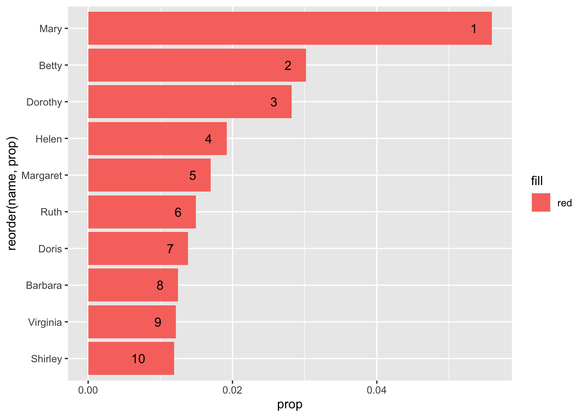
It appears that Mary is the most popular name during this period. But wasn’t Mary popular back in 1890? Let’s look at these 10 names over time:
babynames %>%
filter(name %in% c("Mary", "Barbara", "Betty", "Doris", "Dorothy", "Helen", "Margaret", "Ruth", "Shirley", "Virginia")) %>%
filter(sex =="F") %>%
ggplot(aes(year, prop, color = name)) + geom_line()
It appears that Mary is the most popular name for a very long time, gradually waning as more and more unique names get added to the database every year (therefore decreasing its proportion). Unlike the other 9 names, it definitely doesn’t peak during this generation - so let’s remove it.
babynames %>%
filter(name %in% c("Barbara", "Betty", "Doris", "Dorothy", "Helen", "Margaret", "Ruth", "Shirley", "Virginia")) %>%
filter(sex =="F") %>%
ggplot(aes(year, prop, color = name)) + geom_line()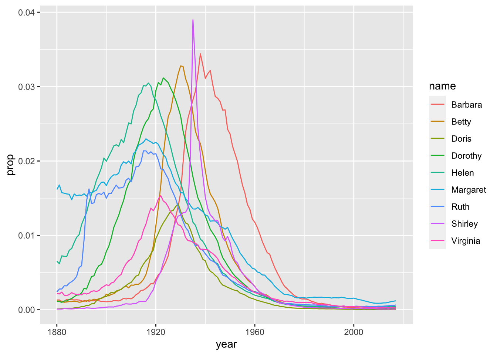
That looks much better! What is that one name that is peaking like crazy right in the middle?
babynames %>%
filter(name %in% "Shirley") %>%
filter(sex =="F") %>%
ggplot(aes(year, prop, color = name)) + geom_line()
Wow! What could we possibly blame this on? The popularity of Shirley Temple? There’s no way to quantitatively measure that, even if we think it to be true.
2.3 Group_by , Summarize()
Similar to creating a pivot table, the summarize() command reshapes your data by creating an entirely new dataset based on the parameters you specify. It is often used with the function group_by(). How is this useful, and how is it different from mutate?
An example will help. If we look at most popular names of the Silent Generation, we see a lot of names repeated:
silent_gen_f %>%
arrange(desc(prop)) %>%
head(10)## # A tibble: 10 × 6
## year sex name n prop rank
## <dbl> <chr> <chr> <int> <dbl> <int>
## 1 1928 F Mary 66869 0.0559 1
## 2 1930 F Mary 64146 0.0550 10712
## 3 1929 F Mary 63510 0.0549 5437
## 4 1931 F Mary 60296 0.0546 15960
## 5 1932 F Mary 59872 0.0541 20937
## 6 1933 F Mary 55507 0.0531 26037
## 7 1934 F Mary 56924 0.0526 30895
## 8 1935 F Mary 55065 0.0507 35868
## 9 1937 F Mary 55642 0.0505 45616
## 10 1936 F Mary 54373 0.0505 40760If we want to count the total number of instances of each name over time, we’d have to use group_by() and summarise(), as well as n_distinct(), which counts the number of unique instances of a variable.
In other words, if we want to see how many instances of each name there were per year, and plot it, we need to use summarize():
babynames %>%
group_by(year) %>%
summarise(name_count = n_distinct(name)) -> distinct
View(distinct)
ggplot(distinct, aes(year, name_count)) + geom_line() 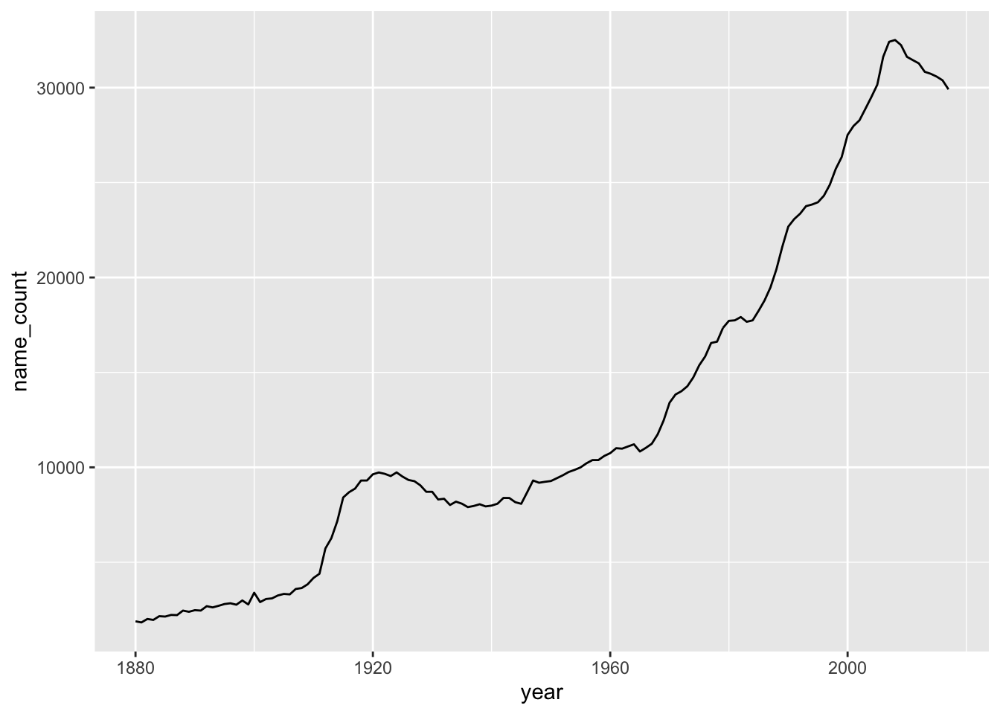
Note that, unlike mutate(), summarize() removes all of our dataframe’s columns except the ones we specify we want to look at in both summarize() and group_by(). So if we want to ‘keep’ a variable in order to later visualize it, we have to add it to the group_by() function:
babynames %>%
group_by(year, sex) %>%
summarise(name_count = n_distinct(name)) -> distinct## `summarise()` has grouped output by 'year'. You can override using the `.groups`
## argument.ggplot(distinct, aes(year, name_count)) + geom_line() +
facet_wrap(~sex)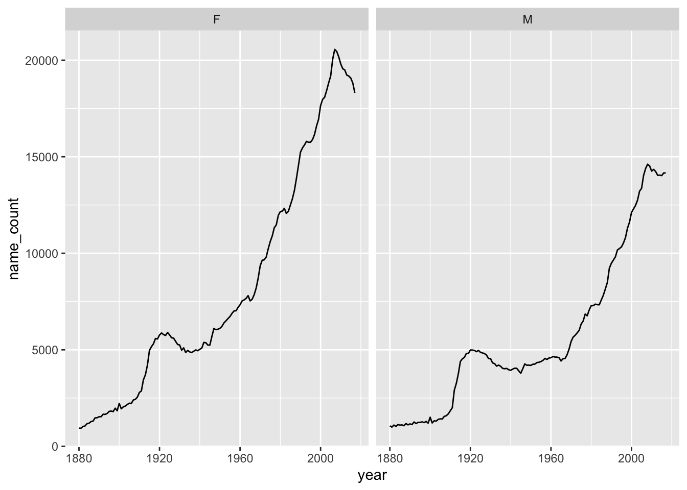
Summarize() is the most challenging of the basic dplyr functions, so don’t be discouraged if you struggle with it! Again, if already familiar with the concept of a Pivot Table, summarize() is basically the same, but in programmatic form: select the columns you wish to compare, strip away the rest of the data, and give me a simplified dataframe that can be visualized.
When do you know to use summarize() instead of mutate()? Well, think of mutate as making a calculated field, adding a column to your dataframe - and summarize() as making a pivot table, stripping away most of your data to look at only a handful of columns in a new way. In the case of babynames, it’s clearly an appropriate time to use summarize() when you see the same name repeated over and over again in your results. We will revisit both techniques.
Playing with the babynames dataset allows us to learn basic data manipulation and visualization, while avoiding other important topics, such as loading data files into R or doing basic statistical calculations - which we will get into shortly. In the meantime, play around with babynames and try to answer specific questions, such as:
- What generation saw the most births in the 20th Century?
- How have ‘virtue names,’ like ‘Charity,’ ‘Temperance,’ or ‘Faith’ fared in babynames: are they more or less popular now than in the past?
- What are the total number of names per year, and is this total increasing or decreasing?
2.4 Working with Strings
library(babynames)
library(tidyverse)
library(tidytext)
library(textdata)Stringr is a package in the tidyverse that deals with, well, strings. What are strings? Anything in your data frame that is text- or character-based. So, in the case of babynames, that’d be Name and Sex - Year, Prop and N are not strings.
Stringr allows for string manipulation across your entire dataset. If, for instance, we had a column of character data that repeatedly mis-spelled a name: Bryan instead of Brian, say - stringr could change every instance of Bryan into Brian in one line of code.
Let’s start playing around with stringr by creating a variable that is equal to a string:
library(stringr)
sentence <- c("hello", "this is a long sentence", NA)Here are some functions from the stringr package that we can use to manipulate this sentence.
- How many characters are there in the string?
str_length(sentence)## [1] 5 23 NAstr_replace(sentence, "l", "X")## [1] "heXlo" "this is a Xong sentence" NAOkay, now let’s create a new string that is a list of character strings:
list <- c("Apple", "Banana", "Pear")Let’s use str_sub to ‘pull out’ the first character of the string:
str_sub(list, 1,1)## [1] "A" "B" "P"What just happened? We told R to only grab the first character. Can we grab the first three characters?
str_sub(list, 1,3)## [1] "App" "Ban" "Pea"Let’s adjust the string’s content so each fruit is written entirely in lower case:
str_to_lower(str_sub(list))## [1] "apple" "banana" "pear"We can also use stringr to detect specific words or phrases:
str_detect(list, "Pear")## [1] FALSE FALSE TRUER returns the position of “Pear” in the list.
2.4.1 Practical Applications of Stringr
Let’s apply more Stringr concepts to a body of text. Where could we find text? How would we get text into R?
One way would be a ‘web scrape’ - programmatically grabbing all the relevant text off of a page, or a series of pages - think Amazon product reviews.
Another would be to import a body of text, like a .txt file, into R, and then break it up into individual words - more on this in the next chapter.
A third way would be to use data included in an R package. More commonly, packages give you access to online datasets too large to download (Spotify, The New York Times, etc.). This technique, of selectively downloading relevant data from a much larger, online database, is the basis for the concept of an ‘API.’ [Application Programming Interface, if you’re wondering.] Many websites also use APIs, with downloadable files for analysis.
So as to avoid any complication, let’s hold off on accessing an API until we cover Twitter, and continue to use the babynames dataset for now; then we can move on to analyzing lyrics, political speeches, and great works of literature.
A snippet of Base R here, rather than the tidyverse: if we want to specify a column in our dataset, we write the name of the dataset or variable, then the dollar sign, then the name of the column:
babynames$name## [1] "Mary" "Anna" "Emma" "Elizabeth" "Minnie" "Margaret"
## [7] "Ida" "Alice" "Bertha" "Sarah" "Annie" "Clara"
## [13] "Ella" "Florence" "Cora" "Martha" "Laura" "Nellie"
## [19] "Grace" "Carrie" "Maude" "Mabel" "Bessie" "Jennie"
## [25] "Gertrude" "Julia" "Hattie" "Edith" "Mattie" "Rose"
## [31] "Catherine" "Lillian" "Ada" "Lillie" "Helen" "Jessie"
## [37] "Louise" "Ethel" "Lula" "Myrtle" "Eva" "Frances"
## [43] "Lena" "Lucy" "Edna" "Maggie" "Pearl" "Daisy"
## [49] "Fannie" "Josephine" "Dora" "Rosa" "Katherine" "Agnes"
## [55] "Marie" "Nora" "May" "Mamie" "Blanche" "Stella"
## [61] "Ellen" "Nancy" "Effie" "Sallie" "Nettie" "Della"
## [67] "Lizzie" "Flora" "Susie" "Maud" "Mae" "Etta"
## [73] "Harriet" "Sadie" "Caroline" "Katie" "Lydia" "Elsie"
## [79] "Kate" "Susan" "Mollie" "Alma" "Addie" "Georgia"
## [85] "Eliza" "Lulu" "Nannie" "Lottie" "Amanda" "Belle"
## [91] "Charlotte" "Rebecca" "Ruth" "Viola" "Olive" "Amelia"
## [97] "Hannah" "Jane" "Virginia" "Emily" "Matilda" "Irene"
## [103] "Kathryn" "Esther" "Willie" "Henrietta" "Ollie" "Amy"
## [109] "Rachel" "Sara" "Estella" "Theresa" "Augusta" "Ora"
## [115] "Pauline" "Josie" "Lola" "Sophia" "Leona" "Anne"
## [121] "Mildred" "Ann" "Beulah" "Callie" "Lou" "Delia"
## [127] "Eleanor" "Barbara" "Iva" "Louisa" "Maria" "Mayme"
## [133] "Evelyn" "Estelle" "Nina" "Betty" "Marion" "Bettie"
## [139] "Dorothy" "Luella" "Inez" "Lela" "Rosie" "Allie"
## [145] "Millie" "Janie" "Cornelia" "Victoria" "Ruby" "Winifred"
## [151] "Alta" "Celia" "Christine" "Beatrice" "Birdie" "Harriett"
## [157] "Mable" "Myra" "Sophie" "Tillie" "Isabel" "Sylvia"
## [163] "Carolyn" "Isabelle" "Leila" "Sally" "Ina" "Essie"
## [169] "Bertie" "Nell" "Alberta" "Katharine" "Lora" "Rena"
## [175] "Mina" "Rhoda" "Mathilda" "Abbie" "Eula" "Dollie"
## [181] "Hettie" "Eunice" "Fanny" "Ola" "Lenora" "Adelaide"
## [187] "Christina" "Lelia" "Nelle" "Sue" "Johanna" "Lilly"
## [193] "Lucinda" "Minerva" "Lettie" "Roxie" "Cynthia" "Helena"
## [199] "Hilda" "Hulda" "Bernice" "Genevieve" "Jean" "Cordelia"
## [205] "Marian" "Francis" "Jeanette" "Adeline" "Gussie" "Leah"
## [211] "Lois" "Lura" "Mittie" "Hallie" "Isabella" "Olga"
## [217] "Phoebe" "Teresa" "Hester" "Lida" "Lina" "Winnie"
## [223] "Claudia" "Marguerite" "Vera" "Cecelia" "Bess" "Emilie"
## [229] "John" "Rosetta" "Verna" "Myrtie" "Cecilia" "Elva"
## [235] "Olivia" "Ophelia" "Georgie" "Elnora" "Violet" "Adele"
## [241] "Lily" "Linnie" "Loretta" "Madge" "Polly" "Virgie"
## [247] "Eugenia" "Lucile" "Lucille" "Mabelle" "Rosalie" "Kittie"
## [253] "Meta" "Angie" "Dessie" "Georgiana" "Lila" "Regina"
## [259] "Selma" "Wilhelmina" "Bridget" "Lilla" "Malinda" "Vina"
## [265] "Freda" "Gertie" "Jeannette" "Louella" "Mandy" "Roberta"
## [271] "Cassie" "Corinne" "Ivy" "Melissa" "Lyda" "Naomi"
## [277] "Norma" "Bell" "Margie" "Nona" "Zella" "Dovie"
## [283] "Elvira" "Erma" "Irma" "Leota" "William" "Artie"
## [289] "Blanch" "Charity" "Lorena" "Lucretia" "Orpha" "Alvina"
## [295] "Annette" "Catharine" "Elma" "Geneva" "Janet" "Lee"
## [301] "Leora" "Lona" "Miriam" "Zora" "Linda" "Octavia"
## [307] "Sudie" "Zula" "Adella" "Alpha" "Frieda" "George"
## [313] "Joanna" "Leonora" "Priscilla" "Tennie" "Angeline" "Docia"
## [319] "Ettie" "Flossie" "Hanna" "Letha" "Minta" "Retta"
## [325] "Rosella" "Adah" "Berta" "Elisabeth" "Elise" "Goldie"
## [331] "Leola" "Margret" "Adaline" "Floy" "Idella" "Juanita"
## [337] "Lenna" "Lucie" "Missouri" "Nola" "Zoe" "Eda"
## [343] "Isabell" "James" "Julie" "Letitia" "Madeline" "Malissa"
## [349] "Mariah" "Pattie" "Vivian" "Almeda" "Aurelia" "Claire"
## [355] "Dolly" "Hazel" "Jannie" "Kathleen" "Kathrine" "Lavinia"
## [361] "Marietta" "Melvina" "Ona" "Pinkie" "Samantha" "Susanna"
## [367] "Chloe" "Donnie" "Elsa" "Gladys" "Matie" "Pearle"
## [373] "Vesta" "Vinnie" "Antoinette" "Clementine" "Edythe" "Harriette"
## [379] "Libbie" "Lilian" "Lue" "Lutie" "Magdalena" "Meda"
## [385] "Rita" "Tena" "Zelma" "Adelia" "Annetta" "Antonia"
## [391] "Dona" "Elizebeth" "Georgianna" "Gracie" "Iona" "Lessie"
## [397] "Leta" "Liza" "Mertie" "Molly" "Neva" "Oma"
## [403] "Alida" "Alva" "Cecile" "Cleo" "Donna" "Ellie"
## [409] "Ernestine" "Evie" "Frankie" "Helene" "Minna" "Myrta"
## [415] "Prudence" "Queen" "Rilla" "Savannah" "Tessie" "Tina"
## [421] "Agatha" "America" "Anita" "Arminta" "Dorothea" "Ira"
## [427] "Luvenia" "Marjorie" "Maybelle" "Mellie" "Nan" "Pearlie"
## [433] "Sidney" "Velma" "Clare" "Constance" "Dixie" "Ila"
## [439] "Iola" "Jimmie" "Louvenia" "Lucia" "Ludie" "Luna"
## [445] "Metta" "Patsy" "Phebe" "Sophronia" "Adda" "Avis"
## [451] "Betsy" "Bonnie" "Cecil" "Cordie" "Emmaline" "Ethelyn"
## [457] "Hortense" "June" "Louie" "Lovie" "Marcella" "Melinda"
## [463] "Mona" "Odessa" "Veronica" "Aimee" "Annabel" "Ava"
## [469] "Bella" "Carolina" "Cathrine" "Christena" "Clyde" "Dena"
## [475] "Dolores" "Eleanore" "Elmira" "Fay" "Frank" "Jenny"
## [481] "Kizzie" "Lonnie" "Loula" "Magdalene" "Mettie" "Mintie"
## [487] "Peggy" "Reba" "Serena" "Vida" "Zada" "Abigail"
## [493] "Celestine" "Celina" "Claudie" "Clemmie" "Connie" "Daisie"
## [499] "Deborah" "Dessa" "Easter" "Eddie" "Emelia" "Emmie"
## [505] "Imogene" "India" "Jeanne" "Joan" "Lenore" "Liddie"
## [511] "Lotta" "Mame" "Nevada" "Rachael" "Robert" "Sina"
## [517] "Willa" "Aline" "Beryl" "Charles" "Daisey" "Dorcas"
## [523] "Edmonia" "Effa" "Eldora" "Eloise" "Emmer" "Era"
## [529] "Gena" "Henry" "Iris" "Izora" "Lennie" "Lissie"
## [535] "Mallie" "Malvina" "Mathilde" "Mazie" "Queenie" "Rosina"
## [541] "Salome" "Theodora" "Therese" "Vena" "Wanda" "Wilda"
## [547] "Altha" "Anastasia" "Besse" "Bird" "Birtie" "Clarissa"
## [553] "Claude" "Delilah" "Diana" "Emelie" "Erna" "Fern"
## [559] "Florida" "Frona" "Hilma" "Joseph" "Juliet" "Leonie"
## [565] "Lugenia" "Mammie" "Manda" "Manerva" "Manie" "Nella"
## [571] "Paulina" "Philomena" "Rae" "Selina" "Sena" "Theodosia"
## [577] "Tommie" "Una" "Vernie" "Adela" "Althea" "Amalia"
## [583] "Amber" "Angelina" "Annabelle" "Anner" "Arie" "Clarice"
## [589] "Corda" "Corrie" "Dell" "Dellar" "Donie" "Doris"
## [595] "Elda" "Elinor" "Emeline" "Emilia" "Esta" "Estell"
## [601] "Etha" "Fred" "Hope" "Indiana" "Ione" "Jettie"
## [607] "Johnnie" "Josiephine" "Kitty" "Lavina" "Leda" "Letta"
## [613] "Mahala" "Marcia" "Margarette" "Maudie" "Maye" "Norah"
## [619] "Oda" "Patty" "Paula" "Permelia" "Rosalia" "Roxanna"
## [625] "Sula" "Vada" "Winnifred" "Adline" "Almira" "Alvena"
## [631] "Arizona" "Becky" "Bennie" "Bernadette" "Camille" "Cordia"
## [637] "Corine" "Dicie" "Dove" "Drusilla" "Elena" "Elenora"
## [643] "Elmina" "Ethyl" "Evalyn" "Evelina" "Faye" "Huldah"
## [649] "Idell" "Inga" "Irena" "Jewell" "Kattie" "Lavenia"
## [655] "Leslie" "Lovina" "Lulie" "Magnolia" "Margeret" "Margery"
## [661] "Media" "Millicent" "Nena" "Ocie" "Orilla" "Osie"
## [667] "Pansy" "Ray" "Rosia" "Rowena" "Shirley" "Tabitha"
## [673] "Thomas" "Verdie" "Walter" "Zetta" "Zoa" "Zona"
## [679] "Albertina" "Albina" "Alyce" "Amie" "Angela" "Annis"
## [685] "Carol" "Carra" "Clarence" "Clarinda" "Delphia" "Dillie"
## [691] "Doshie" "Drucilla" "Etna" "Eugenie" "Eulalia" "Eve"
## [697] "Felicia" "Florance" "Fronie" "Geraldine" "Gina" "Glenna"
## [703] "Grayce" "Hedwig" "Jessica" "Jossie" "Katheryn" "Katy"
## [709] "Lea" "Leanna" "Leitha" "Leone" "Lidie" "Loma"
## [715] "Lular" "Magdalen" "Maymie" "Minervia" "Muriel" "Neppie"
## [721] "Olie" "Onie" "Osa" "Otelia" "Paralee" "Patience"
## [727] "Rella" "Rillie" "Rosanna" "Theo" "Tilda" "Tishie"
## [733] "Tressa" "Viva" "Yetta" "Zena" "Zola" "Abby"
## [739] "Aileen" "Alba" "Alda" "Alla" "Alverta" "Ara"
## [745] "Ardelia" "Ardella" "Arrie" "Arvilla" "Augustine" "Aurora"
## [751] "Bama" "Bena" "Byrd" "Calla" "Camilla" "Carey"
## [757] "Carlotta" "Celestia" "Cherry" "Cinda" "Classie" "Claudine"
## [763] "Clemie" "Clifford" "Clyda" "Creola" "Debbie" "Dee"
## [769] "Dinah" "Doshia" "Ednah" "Edyth" "Eleanora" "Electa"
## [775] "Eola" "Erie" "Eudora" "Euphemia" "Evalena" "Evaline"
## [781] "Faith" "Fidelia" "Freddie" "Golda" "Harry" "Helma"
## [787] "Hermine" "Hessie" "Ivah" "Janette" "Jennette" "Joella"
## [793] "Kathryne" "Lacy" "Lanie" "Lauretta" "Leana" "Leatha"
## [799] "Leo" "Liller" "Lillis" "Louetta" "Madie" "Mai"
## [805] "Martina" "Maryann" "Melva" "Mena" "Mercedes" "Merle"
## [811] "Mima" "Minda" "Monica" "Nealie" "Netta" "Nolia"
## [817] "Nonie" "Odelia" "Ottilie" "Phyllis" "Robbie" "Sabina"
## [823] "Sada" "Sammie" "Suzanne" "Sybilla" "Thea" "Tressie"
## [829] "Vallie" "Venie" "Viney" "Wilhelmine" "Winona" "Zelda"
## [835] "Zilpha" "Adelle" "Adina" "Adrienne" "Albertine" "Alys"
## [841] "Ana" "Araminta" "Arthur" "Birtha" "Bulah" "Caddie"
## [847] "Celie" "Charlotta" "Clair" "Concepcion" "Cordella" "Corrine"
## [853] "Delila" "Delphine" "Dosha" "Edgar" "Elaine" "Elisa"
## [859] "Ellar" "Elmire" "Elvina" "Ena" "Estie" "Etter"
## [865] "Fronnie" "Genie" "Georgina" "Glenn" "Gracia" "Guadalupe"
## [871] "Gwendolyn" "Hassie" "Honora" "Icy" "Isa" "Isadora"
## [877] "Jesse" "Jewel" "Joe" "Johannah" "Juana" "Judith"
## [883] "Judy" "Junie" "Lavonia" "Lella" "Lemma" "Letty"
## [889] "Linna" "Littie" "Lollie" "Lorene" "Louis" "Love"
## [895] "Lovisa" "Lucina" "Lynn" "Madora" "Mahalia" "Manervia"
## [901] "Manuela" "Margarett" "Margaretta" "Margarita" "Marilla" "Mignon"
## [907] "Mozella" "Natalie" "Nelia" "Nolie" "Omie" "Opal"
## [913] "Ossie" "Ottie" "Ottilia" "Parthenia" "Penelope" "Pinkey"
## [919] "Pollie" "Rennie" "Reta" "Roena" "Rosalee" "Roseanna"
## [925] "Ruthie" "Sabra" "Sannie" "Selena" "Sibyl" "Tella"
## [931] "Tempie" "Tennessee" "Teressa" "Texas" "Theda" "Thelma"
## [937] "Thursa" "Ula" "Vannie" "Verona" "Vertie" "Wilma"
## [943] "John" "William" "James" "Charles" "George" "Frank"
## [949] "Joseph" "Thomas" "Henry" "Robert" "Edward" "Harry"
## [955] "Walter" "Arthur" "Fred" "Albert" "Samuel" "David"
## [961] "Louis" "Joe" "Charlie" "Clarence" "Richard" "Andrew"
## [967] "Daniel" "Ernest" "Will" "Jesse" "Oscar" "Lewis"
## [973] "Peter" "Benjamin" "Frederick" "Willie" "Alfred" "Sam"
## [979] "Roy" "Herbert" "Jacob" "Tom" "Elmer" "Carl"
## [985] "Lee" "Howard" "Martin" "Michael" "Bert" "Herman"
## [991] "Jim" "Francis" "Harvey" "Earl" "Eugene" "Ralph"
## [997] "Ed" "Claude" "Edwin" "Ben"
## [ reached getOption("max.print") -- omitted 1923665 entries ]Let’s use str_detect() to find all of the names that include a ‘sh’ sound:
As you see, str_detect() runs as a boolean operator, in that it ascribes a TRUE or FALSE value for each entry in the column, based on our conditional statement: is there a ‘sh’ in the character string?
Let’s combine our previous experience with ggplot to write a long, complicated set of code that will visualize the most popular names starting in ‘Sh’ for women born in 1938:
babynames %>%
filter(str_detect(name, "Sh") & sex=="F" & year == 1938) %>%
arrange(desc(prop)) %>%
head(20) %>%
ggplot(aes(reorder(name,prop),prop, fill = name)) +
geom_col() +
coord_flip()
Let’s fancy that up a bit, by calculating a ‘percentage’ of use of that name per year / per gender:
babynames %>%
filter(str_detect(name, "Sh") & sex=="F" & year == 1938) %>%
arrange(desc(prop)) %>%
head(20) %>%
mutate(percent = (prop * 100)) %>%
ggplot(aes(reorder(name,percent),percent, fill = name)) +
geom_col() +
coord_flip()
how many ‘z’ names since 2000?
babynames %>%
filter(year > 2000 & str_detect(name, "Z")) %>%
arrange(desc(prop))## # A tibble: 13,018 × 5
## year sex name n prop
## <dbl> <chr> <chr> <int> <dbl>
## 1 2001 M Zachary 18186 0.00880
## 2 2002 M Zachary 16622 0.00805
## 3 2003 M Zachary 15539 0.00740
## 4 2004 M Zachary 13711 0.00649
## 5 2005 M Zachary 12283 0.00578
## 6 2006 M Zachary 11005 0.00502
## 7 2007 M Zachary 10212 0.00461
## 8 2008 M Zachary 9226 0.00424
## 9 2012 F Zoey 7466 0.00386
## 10 2009 M Zachary 8078 0.00381
## # … with 13,008 more rowsWhy did R only pull out the names starting with Z? Because we capitalized it. How do we get both?
babynames %>%
mutate(Z = str_count(babynames$name, "[zZ]")) %>%
arrange(desc(prop))## # A tibble: 1,924,665 × 6
## year sex name n prop Z
## <dbl> <chr> <chr> <int> <dbl> <int>
## 1 1880 M John 9655 0.0815 0
## 2 1881 M John 8769 0.0810 0
## 3 1880 M William 9532 0.0805 0
## 4 1883 M John 8894 0.0791 0
## 5 1881 M William 8524 0.0787 0
## 6 1882 M John 9557 0.0783 0
## 7 1884 M John 9388 0.0765 0
## 8 1882 M William 9298 0.0762 0
## 9 1886 M John 9026 0.0758 0
## 10 1885 M John 8756 0.0755 0
## # … with 1,924,655 more rowsInstead of arranging our data by name popularity, let’s look at the names with the most z’s in them:
babynames %>%
mutate(Z = str_count(babynames$name, "[zZ]")) %>%
arrange(desc(Z))## # A tibble: 1,924,665 × 6
## year sex name n prop Z
## <dbl> <chr> <chr> <int> <dbl> <int>
## 1 2010 M Zzyzx 5 0.00000244 3
## 2 1880 F Lizzie 388 0.00398 2
## 3 1880 F Kizzie 13 0.000133 2
## 4 1881 F Lizzie 396 0.00401 2
## 5 1881 F Kizzie 9 0.0000910 2
## 6 1882 F Lizzie 495 0.00428 2
## 7 1882 F Kizzie 9 0.0000778 2
## 8 1882 F Dezzie 5 0.0000432 2
## 9 1883 F Lizzie 496 0.00413 2
## 10 1883 F Kizzie 14 0.000117 2
## # … with 1,924,655 more rowsWhat if, instead of specifying a particular letter, we just wanted to count the most frequent first letters in names?
babynames %>%
mutate(first_letter = substr(name, 1,1)) -> baby_lettersLet’s plot that:
baby_letters %>%
count(first_letter, sort = TRUE) %>%
ggplot(aes(reorder(first_letter, n),n)) +
geom_col() +
coord_flip()
We can also use stringr to calculate the length of all of our strings. What is the frequency of the shortest and longest names?
babynames %>%
mutate(length = str_length(name)) -> babynames_length2.5 Average name length over time
Now, if we want to see the average length of a names over time, the code gets a little mroe advanced - note the mean function we haven’t used like this before:
babynames_length %>%
group_by(year) %>%
summarise_at(vars(length), funs(mean(.))) %>%
ggplot(aes(year, length)) + geom_line()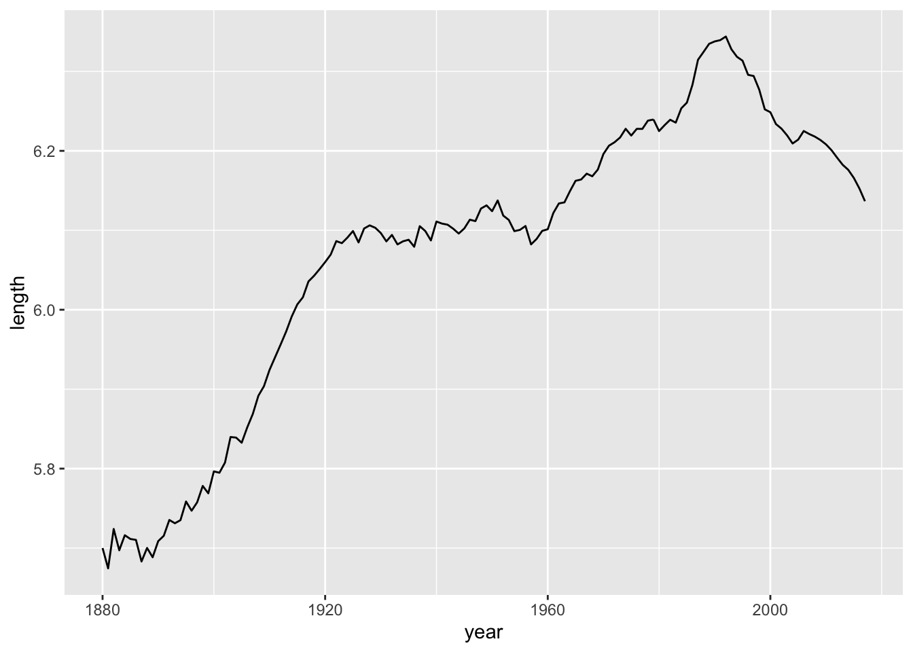
The results are impressive. Let’s split them up by Sex:
babynames_length %>%
group_by(year, sex) %>%
summarise_at(vars(length), funs(mean(.))) %>%
ggplot(aes(year, length, color = sex)) + geom_line()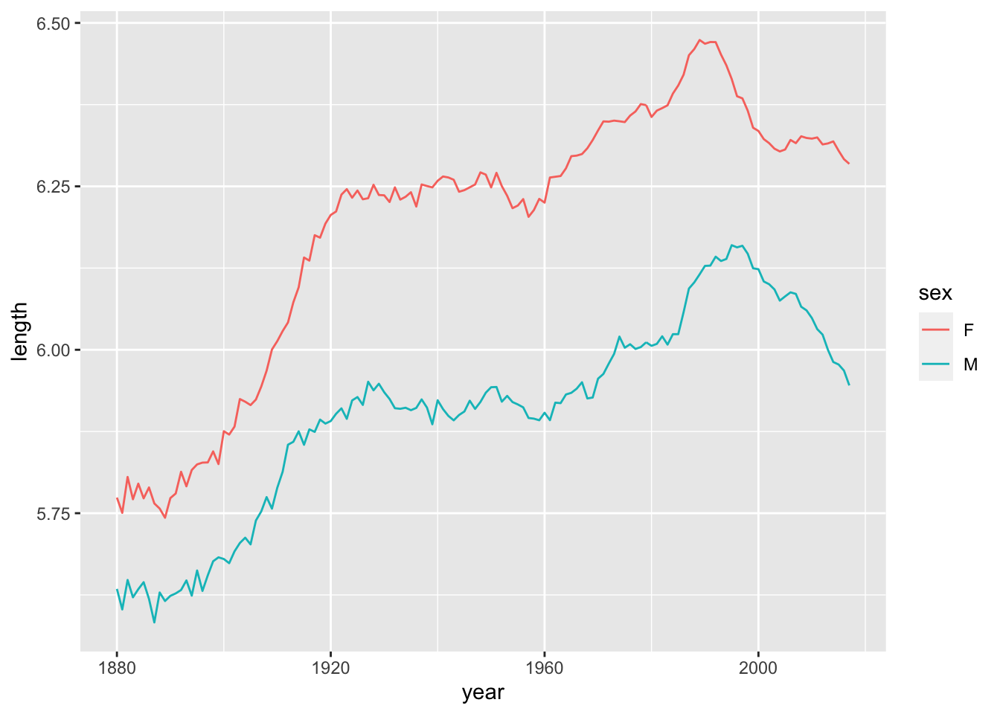
2.6 Revisiting summarize()
As mentioned in the last Chapter, summarize() is confusing. In the case of babynames, you’ll know to use it when you keep getting the same results over and over, and you want to group those names together. Let’s take a look at this issue by calculating the most common 3-letter names:
babynames_length %>%
filter(length == 3) %>%
arrange(desc(prop))## # A tibble: 41,274 × 6
## year sex name n prop length
## <dbl> <chr> <chr> <int> <dbl> <int>
## 1 1975 F Amy 32252 0.0207 3
## 2 1976 F Amy 31341 0.0199 3
## 3 1974 F Amy 29564 0.0189 3
## 4 1973 F Amy 26964 0.0174 3
## 5 1977 F Amy 26731 0.0163 3
## 6 1972 F Amy 25873 0.0160 3
## 7 1880 F Ida 1472 0.0151 3
## 8 1971 F Amy 26238 0.0150 3
## 9 1881 F Ida 1439 0.0146 3
## 10 1882 F Ida 1673 0.0145 3
## # … with 41,264 more rowsWe get a lot of repeated names. Time to summarize!
babynames_length %>%
filter(length == 3) %>%
group_by(name) %>%
summarise(total = sum(n) ) %>%
arrange(desc(total))## # A tibble: 970 × 2
## name total
## <chr> <int>
## 1 Amy 692096
## 2 Ann 469710
## 3 Joe 462099
## 4 Roy 407020
## 5 Lee 292891
## 6 Eva 263741
## 7 Ava 251052
## 8 Ian 222950
## 9 Mia 216774
## 10 Kim 214365
## # … with 960 more rowsLet’s try that again, with 2-letter names:
babynames_length %>%
filter(length == 2) %>%
group_by(name) %>%
summarize(total = sum(n)) %>%
arrange(desc(total)) ## # A tibble: 149 × 2
## name total
## <chr> <int>
## 1 Jo 180579
## 2 Ty 45278
## 3 Ed 26330
## 4 Al 17221
## 5 Bo 10856
## 6 Lu 4013
## 7 Cy 3418
## 8 Wm 2737
## 9 Kc 2585
## 10 An 2048
## # … with 139 more rowsWhat is the longest name?
babynames_length %>%
arrange(desc(length))## # A tibble: 1,924,665 × 6
## year sex name n prop length
## <dbl> <chr> <chr> <int> <dbl> <int>
## 1 1978 M Christophermich 5 0.00000293 15
## 2 1979 M Johnchristopher 5 0.00000279 15
## 3 1980 M Christophermich 7 0.00000377 15
## 4 1980 M Christopherjohn 5 0.0000027 15
## 5 1981 F Mariadelrosario 5 0.0000028 15
## 6 1981 M Christopherjohn 5 0.00000268 15
## 7 1982 F Mariadelosangel 6 0.00000331 15
## 8 1982 M Christopherjohn 6 0.00000318 15
## 9 1982 M Christophermich 5 0.00000265 15
## 10 1983 M Christopherjohn 8 0.00000429 15
## # … with 1,924,655 more rowsHow many 15 letter names are there?
babynames_length %>%
filter(length == 15) %>%
count(name, sort = TRUE)## # A tibble: 34 × 2
## name n
## <chr> <int>
## 1 Christopherjohn 19
## 2 Johnchristopher 17
## 3 Christopherjame 16
## 4 Franciscojavier 16
## 5 Christophermich 8
## 6 Ryanchristopher 7
## 7 Christianjoseph 4
## 8 Christopherjose 4
## 9 Jonathanmichael 4
## 10 Mariadelosangel 4
## # … with 24 more rowsLet’s plot those names:
babynames %>%
filter(name %in% c("Christopherjohn","Johnchristopher","Christopherjame","Franciscojavier", "Christophermich", "Ryanchristopher","Christianjoseph", "Christopherjose", "Jonathanmichael", "Mariadelosangel"
)) %>%
ggplot(aes(year, prop, color = name)) + geom_line() 
By the look of these names, it’s clear that most of them are actually longer than 15 characters - but 15 characters is the cut-off point for the column. Thus, we cannot accurately estimate the most common 15-letter names.
Along similar lines, an analysis of the methodology behind babynames shows that only names that have at least 5 instances in a given year are recorded. So it’d be similarly futile for us to attempt to measure the rarest names, as they are excluded in the database. (It also helps clarify why some rarer names seem to ‘disappear’ in certain years.)
2.7 Additional Functions
OK, what else can stringr do?
How about the average number of vowels per name?
str_count(babynames$name, "[aeiou]")## [1] 1 1 1 3 3 3 1 2 2 2 2 2 1 3 2 2 3 3 2 3 3 2 3 3 3 3 3 1 3 2 4 3 1 3 2 3 4 1 2
## [40] 1 1 2 2 1 1 3 2 2 3 4 2 2 4 1 3 2 1 3 2 2 1 1 2 3 3 2 3 2 3 2 2 1 3 3 4 3 2 2
## [79] 2 2 3 1 2 4 2 2 3 3 2 2 3 3 1 3 2 3 2 2 4 1 3 2 1 1 3 4 2 0 2 2 2 3 3 1 4 3 2
## [118] 3 3 1 2 0 3 3 2 3 3 3 1 4 3 2 1 2 2 1 3 3 2 3 1 2 3 2 3 3 4 4 1 3 1 3 3 4 3 3
## [157] 2 1 3 3 2 2 2 3 3 1 1 2 3 1 2 4 2 2 2 2 3 2 2 3 3 3 1 1 3 4 3 3 2 2 3 1 3 3 3
## [196] 3 2 3 2 2 3 5 2 4 3 2 4 3 3 2 2 2 3 3 3 1 3 3 2 2 2 3 4 5 2 4 1 3 1 3 2 2 4 1
## [235] 3 3 4 2 3 2 1 3 3 2 1 3 4 3 3 3 4 3 2 2 3 5 2 3 2 4 2 2 3 2 2 3 4 4 1 3 3 3 0
## [274] 3 1 3 2 1 3 2 2 3 2 1 1 3 3 2 1 2 3 4 1 2 2 4 1 3 2 2 3 2 3 2 2 3 3 2 2 1 3 3
## [313] 3 4 3 3 3 3 2 3 2 2 2 2 3 1 2 3 2 3 3 2 3 1 2 4 2 3 4 2 2 1 2 2 3 4 4 3 3 3 3
## [352] 2 4 3 1 2 3 3 3 4 4 3 1 3 3 3 2 3 1 1 3 3 2 3 4 4 1 4 3 3 2 3 4 2 2 2 2 3 2 3
## [391] 2 3 5 3 2 3 2 2 3 1 2 1 2 1 3 2 2 2 3 2 3 3 2 1 3 3 2 3 3 2 2 3 2 2 4 1 4 4 3
## [430] 3 1 4 2 2 2 3 3 1 2 3 5 3 3 2 2 1 2 4 1 1 1 3 2 3 3 1 3 2 4 3 3 3 2 2 4 3 2 1
## [469] 2 4 3 3 1 2 3 4 2 1 1 1 3 3 3 4 3 3 1 2 3 2 2 3 4 3 4 3 3 4 3 2 2 2 3 2 3 2 3
## [508] 2 3 3 2 2 3 3 2 2 2 2 1 2 3 2 3 1 2 3 1 1 2 1 1 2 3 3 3 3 3 3 5 3 3 4 3 2 2 2
## [547] 1 4 2 1 3 3 3 3 3 3 1 1 3 2 2 2 3 4 4 3 2 3 3 2 4 4 2 3 2 5 3 1 3 2 2 3 1 3 3
## [586] 1 2 3 2 3 1 2 3 2 1 2 3 3 1 1 1 1 2 3 2 3 3 5 1 3 2 2 3 3 4 4 2 2 1 1 3 4 4 3
## [625] 2 2 3 2 2 2 3 1 3 4 3 3 3 3 2 3 2 3 2 0 1 3 2 2 1 1 2 2 3 4 3 3 3 4 3 2 3 3 2
## [664] 2 2 2 1 1 3 3 2 3 2 3 2 2 2 2 3 2 1 2 2 1 2 2 3 3 3 3 3 3 1 4 4 1 4 3 3 4 2 2
## [703] 2 2 3 3 2 1 2 3 3 3 3 2 2 3 3 4 3 3 2 2 1 3 4 4 2 3 3 2 2 3 2 2 2 2 2 0 3 1 1
## [742] 1 2 1 3 2 2 2 4 3 2 2 0 2 3 2 3 4 1 2 3 4 3 2 1 3 3 2 2 3 1 0 4 2 2 2 3 4 3 3
## [781] 2 4 3 2 1 2 3 3 1 3 3 3 2 1 3 4 3 3 2 2 2 4 3 2 3 2 2 2 3 2 2 2 3 4 2 3 3 3 3
## [820] 1 3 3 2 3 3 2 2 3 3 3 2 4 3 2 2 2 2 3 3 0 1 3 1 2 2 3 3 3 2 4 3 3 3 3 2 1 3 2
## [859] 1 2 2 1 2 1 3 3 4 1 3 5 2 3 3 0 1 3 2 2 2 3 3 2 1 3 4 2 2 1 2 3 3 3 3 2 3 3 0
## [898] 3 4 4 4 3 4 4 3 2 3 4 3 3 2 1 2 2 3 4 4 2 3 3 2 3 4 4 3 2 3 3 1 2 3 4 3 2 2 2
## [937] 2 1 3 3 3 2 1 3 2 2 3 1 2 2 1 2 1 1 2 1 1 1 3 2 3 2 3 3 2 1 3 1 1 2 1 2 2 3 3
## [976] 3 1 1 1 2 2 1 1 1 2 2 2 3 1 2 1 2 2 1 3 1 0 3 1 1
## [ reached getOption("max.print") -- omitted 1923665 entries ]That’s a lot of numbers. Let’s calculate a mean value instead:
mean(str_count(babynames$name, "[aeiou]"))## [1] 2.420695How about consonants?
mean(str_count(babynames$name, "[bcdfghjklmnpqrstvwxyz]"))## [1] 2.752322Example ideas for further exploration:
How many names contain ‘liz’ in them?
babynames %>%
filter(str_detect(babynames$name, "liz") ) %>%
count(name, sort = TRUE) %>%
head(20) %>%
ggplot(aes(reorder(name, n),n)) + geom_col() +
coord_flip()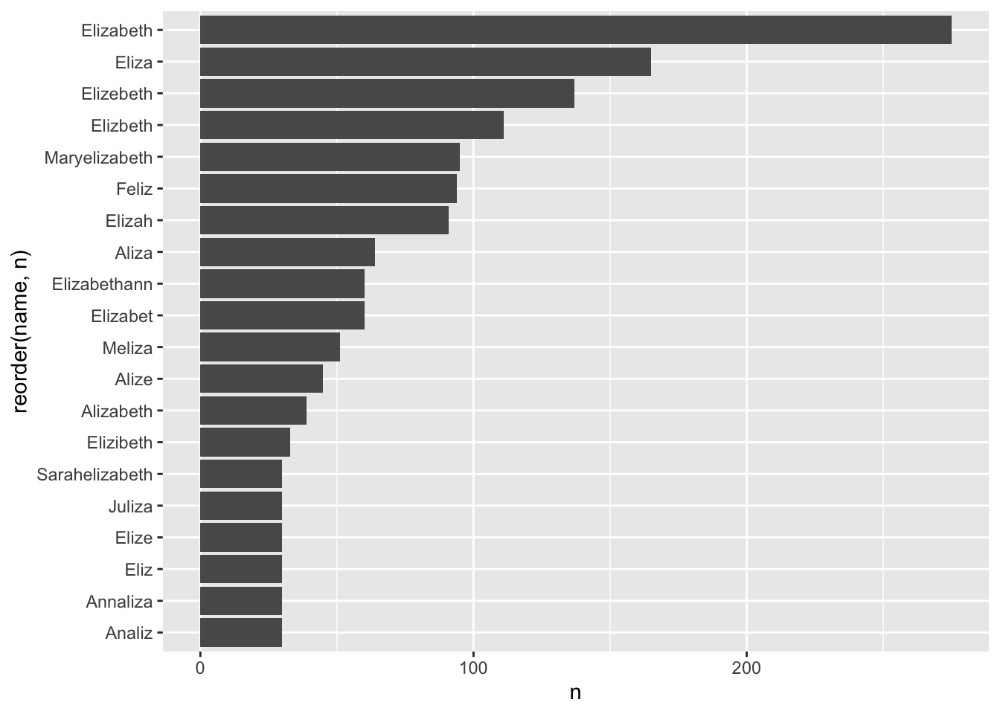
2.8 Case Study: Born Without A (Proper) Name
There are a number of names in the database that are totally anonymous. When, and why?
babynames %>%
filter(name %in% c("Unknown", "Unnamed", "Infant", "Infantof", "Notnamed", "Baby")) %>%
ggplot(aes(year, prop, color = name)) + geom_line() + facet_wrap(~sex)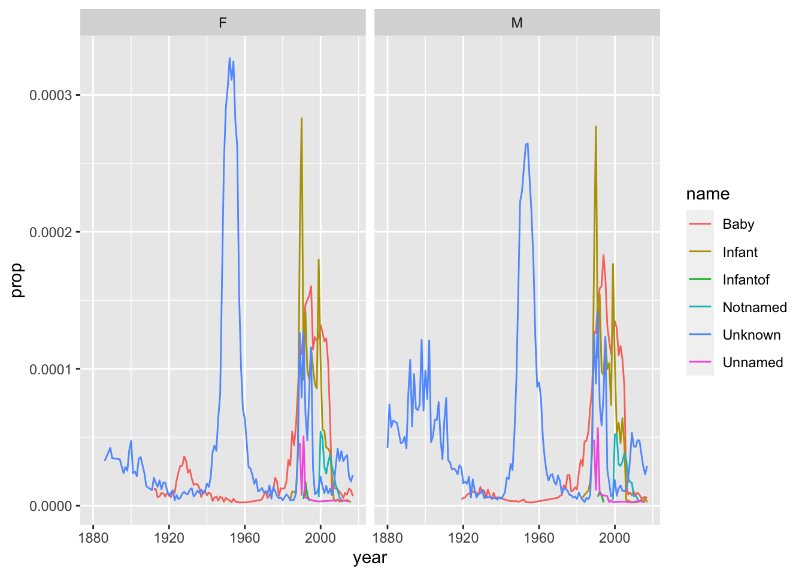
Let’s compare this to the number of unique names per year:
babynames %>%
group_by(year) %>%
summarize(annual = n_distinct(name)) %>%
ggplot(aes(year, annual )) + geom_line()
Babynames also includes a data set called births, that simply lists out the total number of births per year:
data(births)
ggplot(births, aes(year, births)) + geom_line()
Why are these last two graphs different? Because the first is counting names, the second is counting births. And most babies have names that are shared with other babies, especially in the same year.